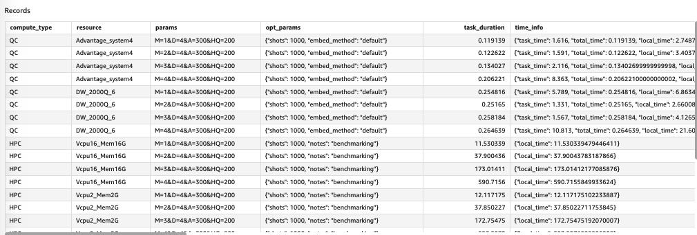

标准镜像
运行批量评估
我们将通过 AWS Step Functions 工作流程运行批量评估，并通过 Amazon QuickSight 控制面板查看结果
术语缩写
- CC: Classic computing
- QC: Quantum computing
从部署输出中获取 Step Functions 链接
图 1: 部署输出里面的工作流链接
单击 Step Functions 链接，您将导航到 AWS Step Functions 控制台。
开始执行
在您的 AWS Step Functions 控制台中，单击 Start execution 按钮，屏幕如下所示：

图 2：执行工作流
-
（可选）输入评估
- 如果您不输入任何内容，它将使用默认输入。
- 如果要自定义批量评估， 请参考本节的输入规范。
-
点击Start Execution，开始批量评估
画面如下图所示：

图 3：执行批量评估
-
等待完成
默认批量评估大约需要 15 分钟。
评估完成后屏幕显示如下。

图 4：完成批量评估
查看仪表板
批量评估完成后，您可以在 AWS QuickSight 控制面板中查看结果。
-
从 CloudFormation 输出中获取仪表板链接：
 图 5: 仪表盘链接
图 5: 仪表盘链接
-
点击链接，您将被导航到仪表板，如下图所示：

图 6: 仪表盘

图 7: 仪表盘数据
Dashboard里面有两张sheet，可以点击切换。

图 8: 仪表盘数据切换
表 1：查看每个实验的结果
在此表中，您可以按实验查看批量评估结果。

图 9: 查看批量评估结果
- 实验历史表
在此表格中，您可以查看每个实验的批量评估结果，实验表中的行是可单击的，您可以单击该行仅查看该实验的结果。
-
任务计数图表
- 如果您在 Experiments hist 表中选择一个实验，它会显示实验的总任务数。
- 如果没有选择实验，它会显示所有实验的总任务数。
-
QC 与 CC 图表
下面两个图表显示了 QC 与 CC 任务的性能
 图 10: CC与QC的运行性能
图 10: CC与QC的运行性能
- QC vs. CC average - 通过不同模型参数（X 轴）比较 QC 和 CC 任务的平均执行时间（Y 轴）
- QC vs. CC by resource - 通过不同模型参数（X 轴）使用不同资源比较 QC 和 CC 任务的执行时间（Y 轴）（对于 QC 是不同 QPU 设备，对于CC是不同的内存-vCPU）
-
QC：按设备列表
它通过不同的模型参数（X 轴）比较不同 QPU 设备的执行时间（Y 轴）

图 11: 按照QC设备统计的结果
-
CC：按资源
它通过不同的模型参数（X 轴）比较不同 CC 资源（内存和 vCPU）的执行时间（Y 轴）

图 12: 按照CC资源统计的结果
-
记录表
它列出了所选实验中每个任务的详细信息（如果没有选择实验，则列出所有）
 图 13: 仪表盘记录表
此表中的字段：
- compute_type：计算类型、CC 或 QC
- resource：资源名称，对于不同QPU设备的QC，对于不同内存-vCPU的CC
- param：模型参数。 M：扭转次数； D：旋转角度精度； HQ：hubo-qubo 值，能量惩罚； A：惩罚项
- opt_params：优化器参数
- task_duration：任务执行时间，以秒为单位
- time_info：对于QC，不同维度的QC任务时间，
total_time是task_duration，对于CC，local_time是task_duration - execution_id：Step Functions 执行 ID
- experiment_name：实验名称，如果输入
experimentName不为空，则为execution start time + input experimentName， 否则为execution start time +execution_id - task_id：对于QC任务，为Braket任务id，对于CC，为空
- result_detail：分子展开前后的体积大小
- result_location：展开后的分子mol2文件
表 2：按每个资源查看结果
在此表中，您可以查看每个资源和 QPU 设备的批量评估结果
图 14: 按资源查看结果
-
计算类型和资源表
它列出了批处理评估中的所有资源，对于 QC - 资源是 QPU 设备，对于 CC - 资源是内存和 vCPU。表格中的项目是可点击的，当您单击一个项目（意味着您选择它）时，此工作表中的指标将切换到该项目。如果未选择任何项目，则显示平均指标。
-
实验历史图
它使用不同的模型参数按实验名称（X 轴，按时间排序）显示所选资源的执行时间（Y 轴）。

图15: 按不同模型参数查看结果1
-
记录表
此表与表 1中的表相同。
输入规范
您可以使用 json 输入自定义评估参数。
输入模式：
{
"version": "string",
"runMode": "string",
"mol2文件": "string",
"modelVersion": "string",
"experimentName": "string",
"optParams": {
"qa": {
"shots": "int"
},
"sa": {
"shots": "int"
}
},
"modelParams": {
"M": "int []",
"D": "int []"
},
"devicesArns": "string []",
"ccResources": "[int, int] []",
}
注意
所有字段都是可选的
定义：
- version：输入模式的版本，当前仅支持值为：'1'
- runMode：运行模式，值可以是
ALL、CC或QC，默认：'ALL'；CC- 仅运行 CC 任务，QC仅运行 QC 任务，ALL- 运行两个任务 - mol2文件: mol2 文件的 S3 url
- modelVersion：模型版本，默认：'latest'
- experimentName：批次评估的名称
- modelParams：模型参数，M：扭转数，D：旋转角度精度。详细
请参考建立模型-技术细节。有效值：
M: [1, 2, 3, 4, 5, 6, 7] D：[4] 或 [8]
注意
M 的最大值取决于 D、QPU 设备和输入 molFile 的值。
如果您使用默认的 mol2文件（表示输入中未提供 molFile），则最大值组合如下表所示：
| 设备 | D | 最大 M |
|---|---|---|
| arn:aws:braket:::device/qpu/d-wave/DW_2000Q_6 | 4 | 4 |
| arn:aws:braket:::device/qpu/d-wave/DW_2000Q_6 | 8 | 3 |
| arn:aws:braket:::device/qpu/d-wave/Advantage_system4 | 4 | 7 |
| arn:aws:braket:::device/qpu/d-wave/Advantage_system4 | 8 | 4 |
如果使用自己的mol2文件，会跳过输入校验，如果值超过设备容量，会执行失败。
-
devicesArns：QPU 设备 arn。有效值：
arn:aws:braket:::device/qpu/d-wave/DW_2000Q_6 arn:aws:braket:::device/qpu/d-wave/Advantage_system4 -
ccResources：GiB 中的内存（第一个元素）和 vCPU（第二个元素），例如4GiB 内存和 2 个 vCPU 是：
[4, 2]
典型（默认）输入：
{
"version": "1",
"runMode": "ALL",
"optParams": {
"qa": {
"shots": 1000
},
"sa": {
"shots": 1000
}
},
"modelParams": {
"M": [1, 2, 3, 4],
"D": [4]
},
"devicesArns": [
"arn:aws:braket:::device/qpu/d-wave/DW_2000Q_6",
"arn:aws:braket:::device/qpu/d-wave/Advantage_system4"
],
"ccResources": [
[2, 2],
[4, 4],
[8, 8],
[16, 16]
]
}